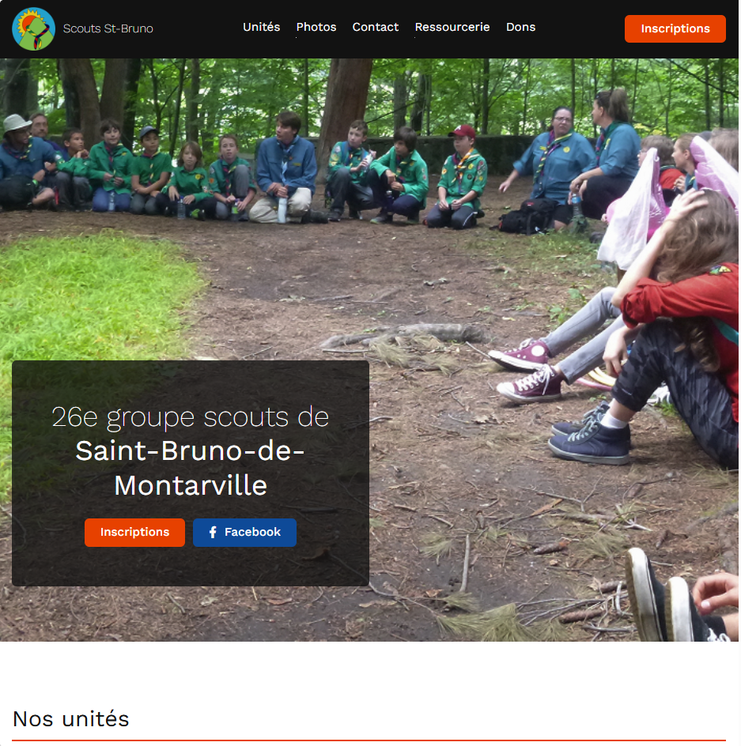

{% include '_partials/_header.html' %}

<section class="section hero">
    <div class="wrapper">
        <div class="hero__content">
            <h1>Elliot Schmit</h1>

            <p>
                Le côté
                <b>logique</b>
                de la programmation et le côté
                <b>créatif</b>
                du design.
            </p>
        </div>

        <div class="hero__media">
            
        </div>
    </div>
</section>

<section class="section section-dark projets">
    <div class="wrapper">
        <h1>Mes projets</h1>

        <div class="cards">
            <a href="#" class="card">
                <div class="card__media">
                    
                </div>
                <div class="card__content">
                    

                    <h2>Site des scouts de St-Bruno</h2>
                    <ul class="categories">
                        <li>HTML</li>
                        <li>JS</li>
                        <li>CSS</li>
                        <li>PHP</li>
                        <li>Design</li>
                    </ul>

                    <svg class="icon plus">
                        <use href="#icon-plus"></use>
                    </svg>
                </div>
            </a>
        </div>
    </div>
</section>

{% include '_partials/_footer.html' %}
